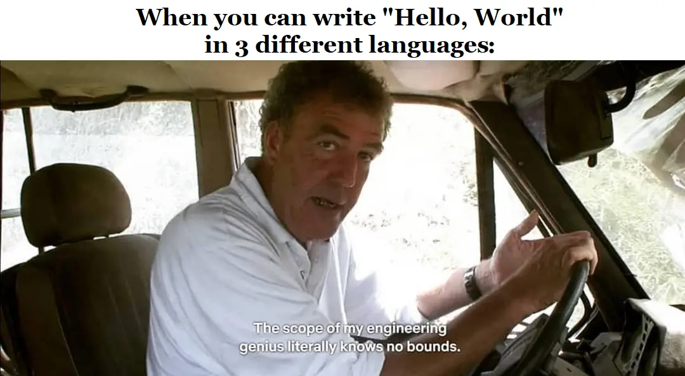

A short introduction

My name is Sadmin Durmishi, I was born and raised in North Macedonia.
First, I want to say that I'm and adventurer at heart above all else. I love being outdoors,
exploring, hiking however, I fell in love with computers through video games. It all started
in 2002 when the latest Command & Conquer Generals hit the shelves.
I got a PC shortly after and soon discovered the possibilities that computers can offer, besides
spending all day building bases and playing Generals.... I realized how powerful a computer can be,
and that, if you spoke "the right language", you could actually make it do things or perform
tasks that can make you seem like a wizard to your friends.
In 2008, I started writing basic batch files, it was fun messing with them and creating simple
but fun things for me at the time. After I started high school, we had a Pascal(for those of you
wondering what this is, don't Google it :P) and C++ programming course.
Ever since, I was absolutely blown away by what could be accomplished through these
seemingly cryptic languages. For some reasons whenever I would try and work on some language
for a couple of months, something would happen and knock me off track.
Then I'd try to take a new language for a spin... The most experience I had with programming, was
with the C language. I absolutley love C, even though I haven't mastered it. I have to say,
I'm kind of proud that I have experimented with around 6 of them. For the record, there are
hundreds of programming languages. Most people only need to know anywhere from 1-3, depending on
which field they want to work in the world of Computer Science and Technologies (soon to be our
machine overlords :/).

Why did I develop this website?
After working at Slice as an SEO Analyst for a year, I was inspired to build this website to test out my SEO knowledge that I have acquired and hone my web development skills. I plan to expand the site besides SEO content and write about computer science, technologies and techniques. I'll be mentioning SEO a lot throughout the site so, for those of you not familiar with the term, it stands for: Search Engine Optimization. I have been putting this project off for a long time but finally, I decided to build this site, from scratch by using Boilerplate HTML5 and CSS3 + Bootstrap 4 and may even include some hand crafted JavaScript as the website develops, besides the external scripts used now. I also wanted to have a playground where I'm able to test out my SEO skills, frontend and backend development. Building this site showed me how much effort actually goes into all the sites and web apps we use on a daily basis without much of a thought about how things actually work.
What makes a website climb in Google's Search Engine Results Pages(SERP) and retain a decent user base?
- Page Speed
- Inheritance
- Reliability
- Engagement
Lets's explain them a little bit.
1. Page Speed: In today's modern and fast-paced world, people have less and less time for waiting.
And justifiably so, as we are constantly bombarded with all sorts of information, work, and all
the other things that life throws at us.
With that in mind, your website should load fast because people don't have time to wait for it to
load. They want information and they want it fast. Make sure your site meets today's standards.
2. Inheritance: Means the users have all the information available to them on your site.
Everything should be accessible no matter where it's located on your site and no matter
what device they are viewing it from.
3. Reliability: Users expect your site and the content presented on it to be reliable, at all times.
Make sure to design it for slow and intermittent content.
4. User Engagement: What this refers to is that the content presented on your site should be easy
for the average user or customer to understand. The UI of the website must be friendly to the eyes,
and finally it should keep your audience to keep coming back to your site.
My skills include:
- On Page SEO
- Off-page SEO
- Local SEO
- Copywriting
- HTML
- CSS + Bootstrap
- Keyword Research
If you have any business inquiries or any feedback, you can reach me at: satko_d@live.com